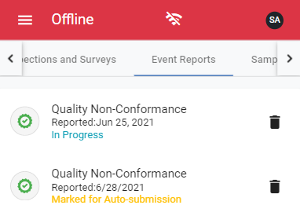

Before you go offline, you must configure an offline PIN that will be used to access myCority when you are not connected to the internet.
Creating a New Record Offline
When prompted, enter your offline verification PIN and click LogIn.
Select Offline from the side menu.
Click CreateNew. A list of available offline templates will display.
Locate the record you want to complete. You can use the search field to search for a questionnaire by name.
Click Download beside the questionnaire. A status bar will display as the questionnaire downloads.
When the download is complete, only the Submit and Delete buttons will display next to the record. If you click Delete , the download will be removed.
Completing an Existing Record Offline
When prompted, enter your offline verification PIN and click Login.
Select Offline from the side menu.
Select a record to open it.

Complete the record to the best of your ability.
To proceed to the next question, click Next at the bottom of the form, or select a section from the dropdown list.
When you are finished, click Submit. When you submit an offline record, a ‘Records will be auto-submitted when you are back online’ message will display at the top of the screen, and the record’s status will change from "In Progress" to "Marked for Auto-submission".